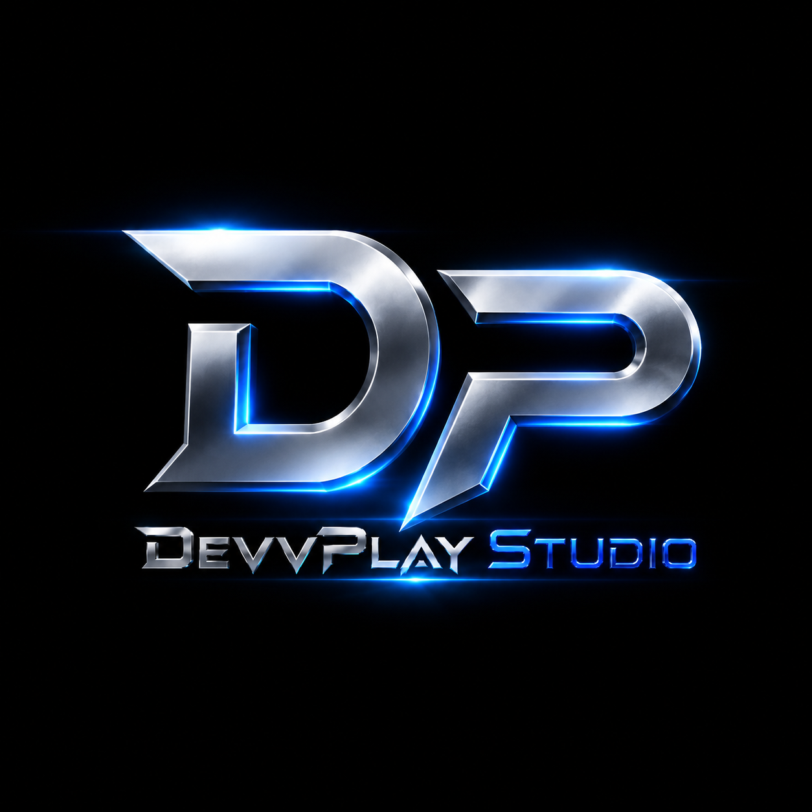

25 DIC · 2026
Presentación del tráiler oficial
Primer avance cinematográfico del universo de Lawless District. El video todavía no está disponible.

DevvPlay StudioOPEN WORLD SHOOTER · PLAYER ECONOMY · ONLINE TRADING
Un mundo abierto multijugador de comercio, distritos y reputación. En desarrollo activo por DevvPlay Studio. Estreno oficial anunciado para el 2 de marzo de 2027.
Lanzamiento oficial · 2:00
El proyecto continúa en desarrollo. Estamos trabajando en renderizado, optimización visual, escenarios y sistemas de juego.
Primer avance cinematográfico del universo de Lawless District. El video todavía no está disponible.
Fase beta prevista para pruebas del cliente, rendimiento y experiencia multijugador. Acceso sujeto a disponibilidad.
Fecha anunciada para el lanzamiento oficial de Lawless District. Horario y detalles de acceso por confirmar.
Referencia provisional: 2:00, hora del centro de México.
Lawless District combina exploración urbana, combates entre jugadores, zonas de riesgo, mercado interno, intercambio de objetos y progresión por reputación. Cada jugador puede decidir si dominar por fuerza, comercio o estrategia.
Compra, vende e intercambia recursos, armas, skins y objetos raros dentro de un mercado dinámico.
Cada distrito tiene niveles de peligro, recompensas especiales y puntos estratégicos para controlar.
Mejora tu reputación, desbloquea acceso a zonas exclusivas y crea tu propio camino dentro de la ciudad.
Primeras imágenes del mapa, zonas de comercio, distritos nocturnos y puntos de encuentro.
Avances del desarrollo, mejoras del cliente y anuncios de la beta.
Continuamos trabajando en el renderizado, la ambientación y el rendimiento general del proyecto.
La presentación del tráiler oficial está programada para el 25 de diciembre.
Pruebas previstas para el 1 de enero, sujetas al progreso del desarrollo.
Lawless District cuenta con el apoyo e impulso de Ventiver Servicios, colaborador clave en el desarrollo y crecimiento del proyecto.
Agradecemos profundamente su confianza, respaldo y aportación para hacer posible la evolución de este juego. Su apoyo representa una parte importante del avance de DevvPlay Studio y de la construcción de esta experiencia online.
Colaborador de financiamiento, impulso y respaldo del proyecto.
Prepara tu equipo para LAWLESS DISTRICT. Especificaciones preliminares, sujetas a cambios durante el desarrollo y la beta.
*RTX 5080 Ti: denominación indicada por el desarrollador, pendiente de confirmar como modelo comercial. Las especificaciones son objetivos preliminares; los requisitos recomendados son una propuesta y no se han validado con pruebas de rendimiento.
Descarga el launcher de Lawless District para Windows. La beta está prevista para el 1 de enero de 2027 y el lanzamiento oficial para el 2 de marzo de 2027.
Descarga del launcher disponible. El juego y los servidores todavía están en desarrollo; el launcher actual puede no instalar o ejecutar el juego.
Proyecto independiente creado, diseñado y programado por DevvPlay Studio, con impulso económico de Ventiver Servicios.
Mensaje de la página.